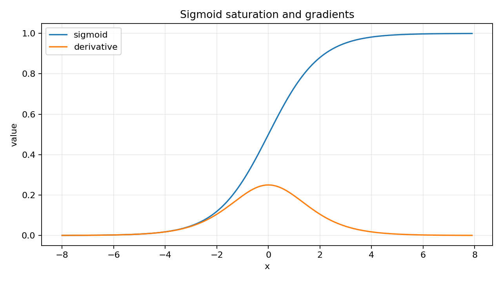
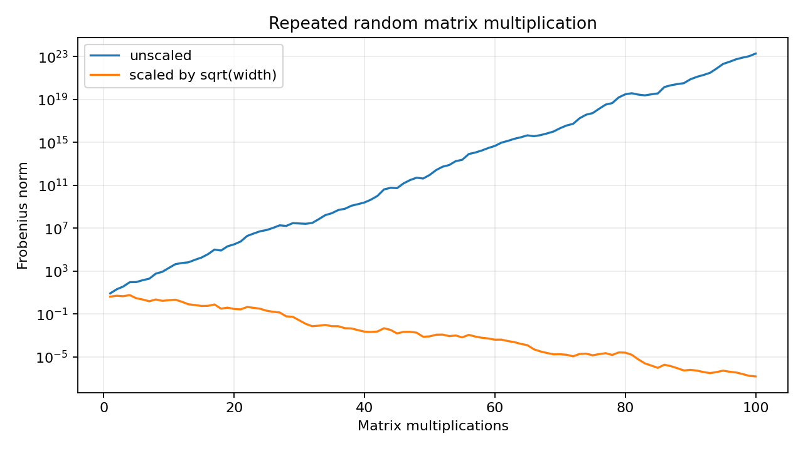
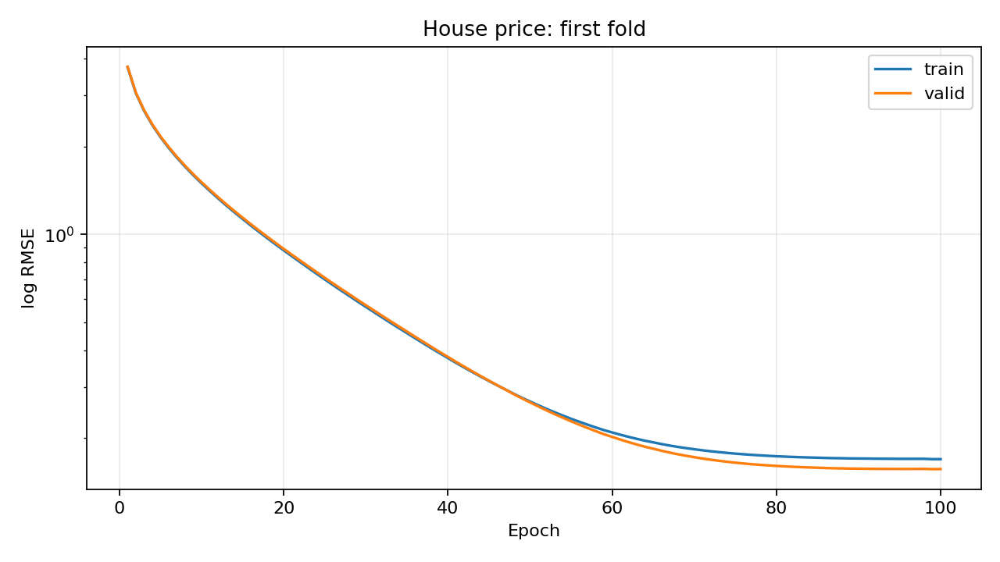

上周把多层感知机、权重衰减和Dropout跑通了，但训练循环里的loss.backward()仍像一个黑盒。本周接着学习《动手学深度学习》第4章4.7至4.9，整理前向传播、反向传播、参数初始化和分布偏移，并把4.10的房价预测案例完整跑了一遍。重点是弄清梯度从哪里来，以及真实数据怎样进入模型。
这篇复盘主要记录
- 前向传播、反向传播和参数更新分别做什么
- 梯度为什么会消失或爆炸，初始化怎样影响训练
- 训练和使用模型时，数据分布变化意味着什么
- 房价数据预处理、5折验证与真实训练结果
一、从训练循环回到计算图
前向传播按输入到输出的顺序计算预测和损失；反向传播从目标函数出发，沿计算图反方向应用链式法则，得到各个参数的梯度；优化器再使用梯度更新参数。这三步有先后顺序，也有不同职责。
optimizer.zero_grad() # 清除上一批的梯度
predictions = model(X) # 前向传播
loss = loss_function(predictions, y)
loss.backward() # 计算梯度
optimizer.step() # 更新参数backward()不会自动替我们做梯度下降。PyTorch默认累加梯度，所以通常还需要先清零。反向传播会用到前向计算的中间结果，这也是训练通常比单纯预测需要更多内存的原因之一。
二、手算一次反向传播
4.7以一个不含偏置的单隐藏层网络说明计算过程。沿用书中的列向量写法，输入先经过隐藏层权重和ReLU，再进入输出层：
z = W₁x，h = ReLU(z)，o = W₂h
本次数值示例选择半平方误差，并加入L2正则项：
J = ½||o − y||² + λ/2 × (||W₁||² + ||W₂||²)
输出层梯度由误差与隐藏层输出的外积得到，再加上正则项的梯度。把误差传回隐藏层时，先乘输出层权重的转置，再乘ReLU的导数。
output_gradient = prediction - target
manual_output = torch.outer(output_gradient, hidden)
manual_output += penalty_coefficient * output_weights
hidden_gradient = output_weights.T @ output_gradient
hidden_gradient *= (pre_activation > 0).to(x.dtype)
manual_hidden = torch.outer(hidden_gradient, x)
manual_hidden += penalty_coefficient * hidden_weights使用同一组输入和权重调用自动求导，两层梯度都与手算结果一致，目标函数值为0.1322。这个对照把“损失对输出的影响”和“输出对参数的影响”连了起来。不过，复杂网络的矩阵维度和多条依赖路径还需要继续练习。
三、sigmoid为什么可能让梯度越来越小
sigmoid的导数为σ(x)(1−σ(x))，最大值只有0.25。输入绝对值较大时，它进入饱和区，导数更加接近0。本次在x=−8处计算到的导数约为0.000335。

链式法则需要把各层的局部导数组合起来。反复乘上小数可能让靠近输入层的梯度变得很小，使参数更新缓慢。这里解释的是一种机制；实际网络还会受到权重矩阵和结构的影响，不能只根据一个激活函数断言某次训练一定出现梯度消失。
四、随机矩阵连乘与数值尺度
书中用100个4×4随机矩阵连乘，展示数值可能怎样快速增长。本次固定随机种子42，未缩放矩阵连乘后的Frobenius范数约为1.91×10²³。脚本另外增加了每个矩阵除以√4的对照。

反向传播也涉及多次矩阵乘法，因此权重尺度会影响梯度尺度。缩放对照帮助观察这一点，但不能保证所有随机连乘都稳定，更不能替代对真实训练中损失和梯度的检查。
五、初始化不只是随便放几个随机数
如果同一隐藏层的神经元使用完全相同的权重、偏置，后续连接也对称，它们就会给出相同输出并得到相同梯度。本次示例中三个隐藏单元经过一次更新后三行权重仍然相同，没有学出不同的表示。
随机初始化可以打破这种对称性，但随机数的尺度也需要控制。Xavier初始化按照输入和输出宽度设置方差：
Var(w) = 2 / (输入宽度 + 输出宽度)
weights = torch.empty(256, 128)
torch.nn.init.xavier_uniform_(weights)
expected_variance = 2 / (128 + 256)理论方差约0.005208，本次样本方差约0.005214。初始化方案需要结合激活函数选择；理解这个尺度关系是起点，方差推导和不同激活函数下的选择还没有完全熟练。
六、模型上线后为什么可能失效
4.9讨论环境与分布偏移。训练数据和实际使用时的数据未必来自同一种分布，模型在旧测试集上的表现也就未必能代表新环境。
| 类型 | 变化的部分 | 保持不变的假设 |
|---|---|---|
| 协变量偏移 | 输入分布P(x) | 给定输入后的标签分布P(y|x) |
| 标签偏移 | 标签分布P(y) | 给定标签后的输入分布P(x|y) |
| 概念偏移 | 输入与标签的关系P(y|x) | 不要求输入分布也发生变化 |
本节主要讲概念，我补充了一个合成数据示例：在y=2x+1附近拟合线性模型，只把输入均值从0移到3，MSE从约0.0094变为0.0103；把关系改成y=−2x+1后，MSE升至约15.5768。
这个例子里的线性关系在整个输入范围都成立，所以协变量偏移没有明显破坏预测；它并不说明协变量偏移普遍无害。脚本没有模拟标签偏移，需要把这部分定义与实际样例继续对应起来。
七、把真实房价数据送进模型
房价案例比Fashion-MNIST更接近常见表格任务。训练数据有1460行、81列，其中包含Id和目标SalePrice；测试数据有1459行、80列，没有房价标签。
- 移除Id，不把SalePrice混入输入特征。
- 对数值特征标准化，再把缺失值填为0。
- 对类别特征做独热编码，同时保留类别缺失的指示列。
- 明确转换成float32张量，得到331维输入特征。
numeric_names = all_features.select_dtypes(include="number").columns
numeric = all_features[numeric_names]
deviations = numeric.std().replace(0, np.nan)
all_features[numeric_names] = (
(numeric - numeric.mean()) / deviations
).fillna(0)
all_features = pd.get_dummies(all_features, dummy_na=True, dtype=float)常量列和全缺失数值列需要处理零或缺失标准差；较新pandas中的独热编码也要明确转换为浮点类型。自动测试覆盖了缺失值、常量列、全空列和测试集新增类别，确认输出维度对齐且没有非有限值。
八、房价基线与5折交叉验证
模型沿用书中的单层线性回归，用Adam训练，学习率5、权重衰减0、批量大小64，每折训练100轮。训练目标是原始房价的均方误差；评估时使用log RMSE，两者不能混为一谈。
log RMSE = √mean[(log(预测价格) − log(真实价格))²]
计算评估指标前，将小于1的预测值裁剪为1，避免对数出现非法值。对数误差更接近相对价格偏差：同样差10万元，对低价房和高价房的意义不同。
| 验证折 | 训练log RMSE | 验证log RMSE |
|---|---|---|
| 第1折 | 0.169554 | 0.156764 |
| 第2折 | 0.162525 | 0.190751 |
| 第3折 | 0.163822 | 0.168261 |
| 第4折 | 0.168405 | 0.154810 |
| 第5折 | 0.163309 | 0.182757 |
| 平均 | 0.165523 | 0.170669 |

最后在全部1460条训练数据上重新训练100轮，训练log RMSE约0.162252，并生成1459条本地预测。已确认预测Id唯一、价格均为有限正数；本次没有提交Kaggle，也没有官方测试评分。
九、代码组织与本周验证
仍然沿用之前的独立脚本结构：01至05是计算图、稳定性和分布偏移示例，06至09依次完成房价预处理、交叉验证、全量预测和绘图。公共函数放在week13_basics.py，每个脚本都可以单独运行。
- 使用现有PyTorch 2.8.0环境，房价小型线性模型在CPU上完成训练。
- 不依赖d2l工具包，将书中的训练、评估和分折逻辑写成普通Python函数。
- 下载使用书中数据文件，并核对SHA-1后写入缓存。
- 分折使用连续切片，并保留样本数不能整除时的余数，避免漏掉样本。
- 图表读取本次实际结果，Matplotlib标题使用英文，避免默认字体缺少中文字形。
4项自动测试全部通过，检查了手算梯度、预处理边界、分折覆盖与隔离、无效分折参数。9个示例也都实际运行过。这里的验证确认了代码运行与这些行为，但不能替代更多模型实验和真实环境评估。
十、还不熟的地方与下周计划
- 复杂计算图。简单两层网络能逐步算出梯度，但更深的网络和矩阵维度还需要继续手推。
- 初始化推导。知道初始化会影响尺度和对称性，Xavier方差推导及其与激活函数的配合还不熟。
- 模型选择。房价实验主要沿用书中参数，尚未系统比较学习率、权重衰减或不同模型。
- 01继续房价案例
比较学习率与权重衰减，练习逐折拟合预处理，分析训练和验证误差。
- 02学习深度学习计算
开始第5章，练习模型构造、参数管理和延后初始化。
- 03复习计算图
继续手推小网络梯度，把数值稳定性与真实训练过程对应起来。
计算图链式法则初始化分布偏移验证
这周最有帮助的变化，是把调用框架函数与背后的数学过程连起来，再用真实表格数据练习完整建模流程。能跑出一个结果是起点，说明结果怎样得到、评估条件是什么，以及哪些问题还没有解决，同样需要认真记录。